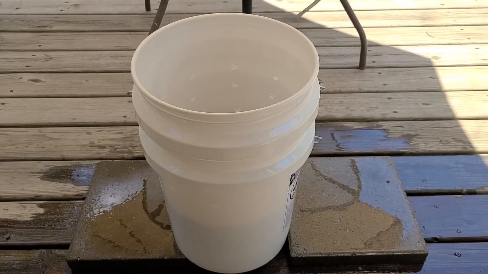
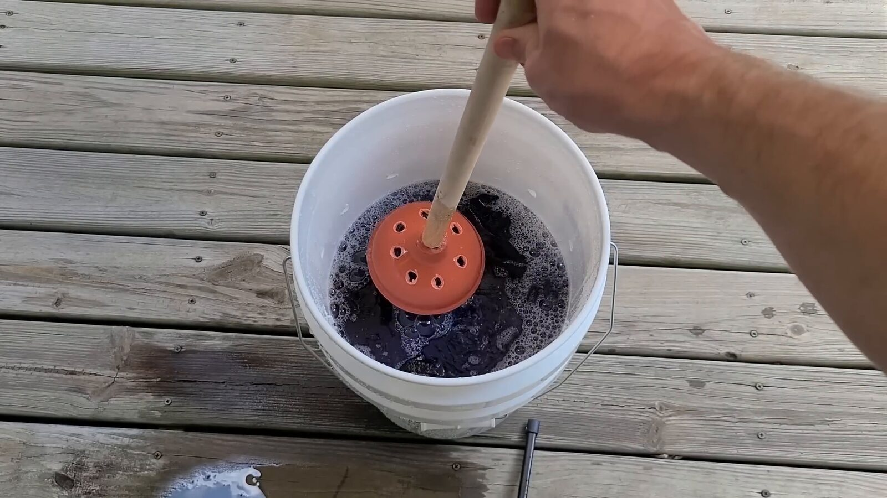
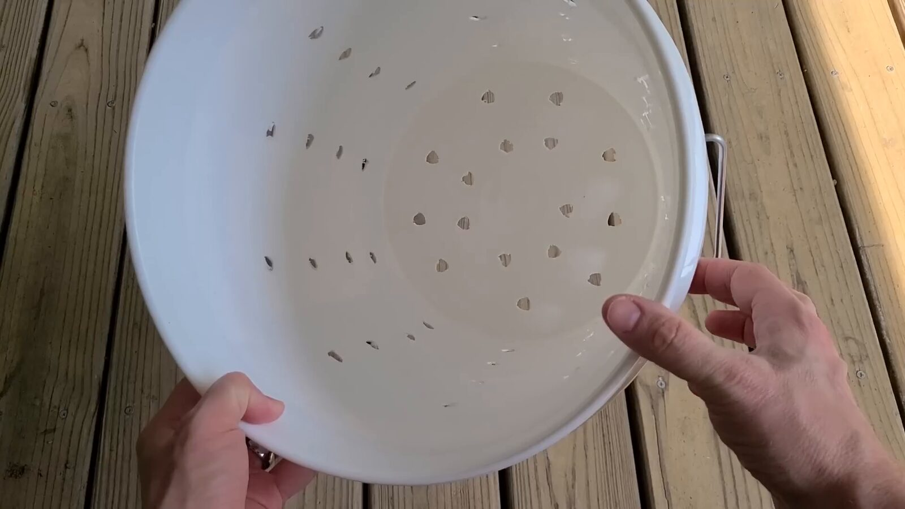
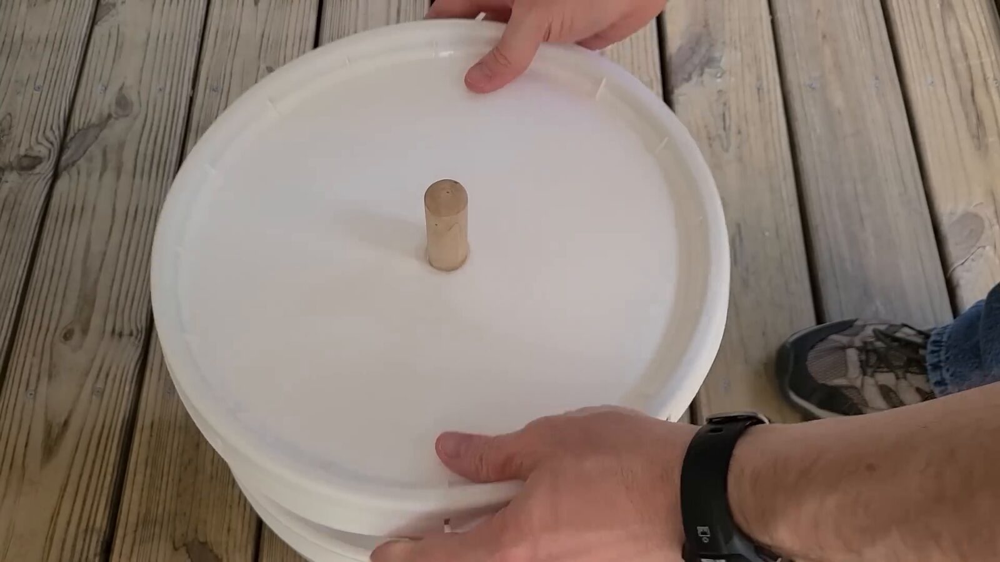
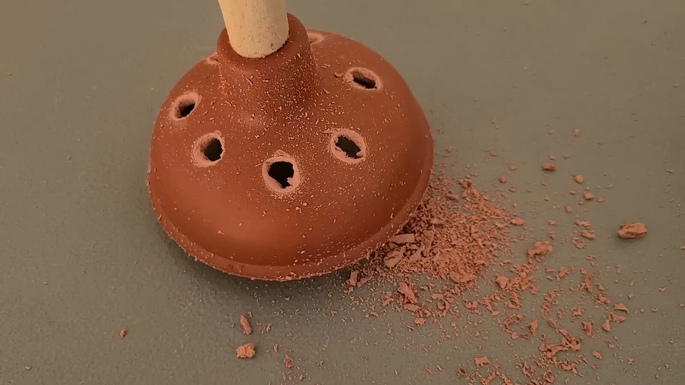
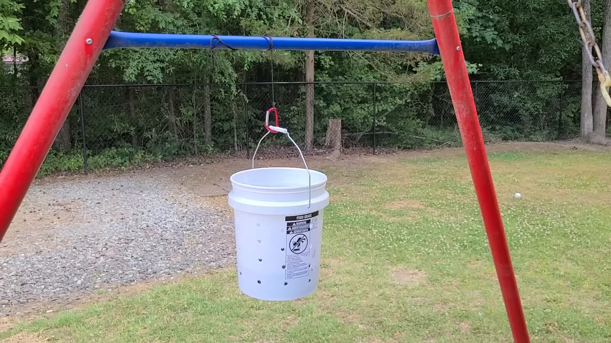
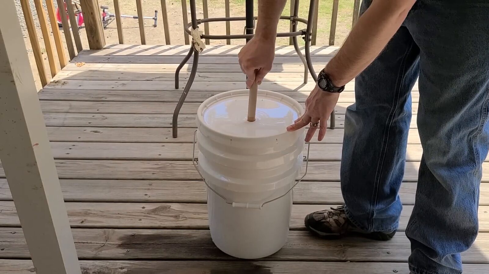
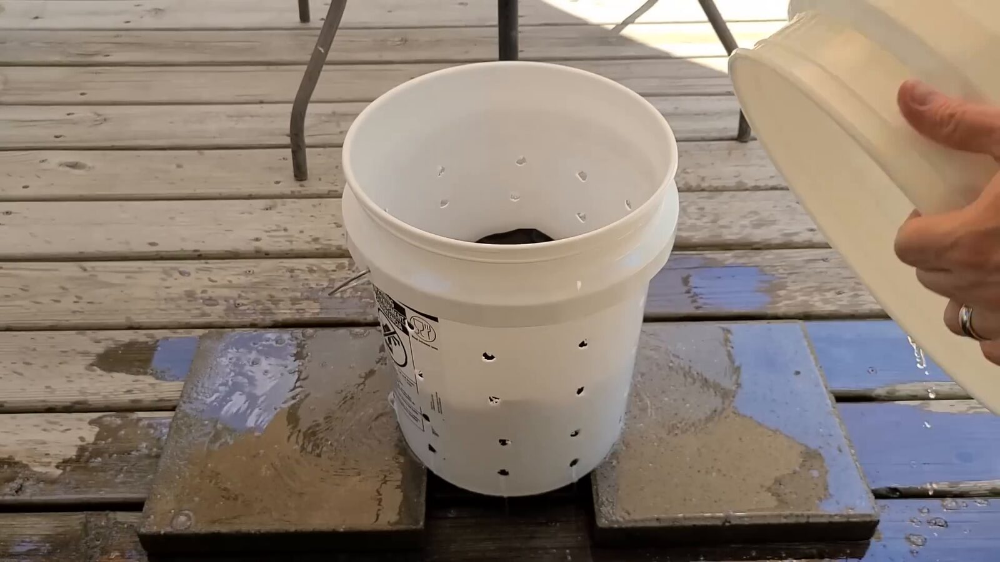
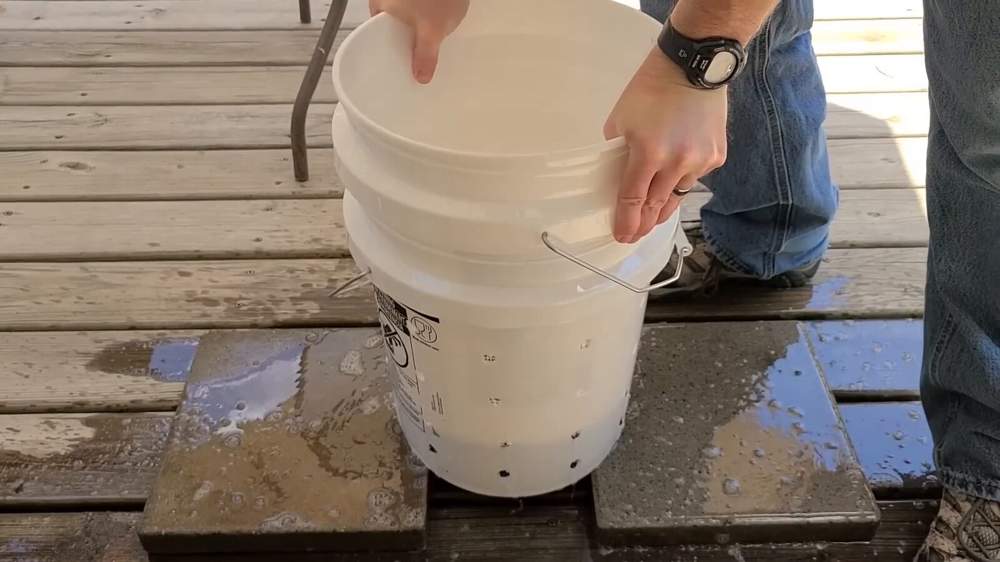

05:4501 · The drum
The outer bucket
A standard 5-gallon bucket with no holes. It holds the wash and rinse water and catches everything that drains out of the basket.
Watertight · 5 gal · no modifications
The 5-gallon off-grid washing machine
A hand-powered laundry setup for the day the grid goes down — or the week you’d rather not use it. Fill, soak, wash, rinse, spin, and line dry with nothing but water, soap, and a little upper-body work.
Adapted from the 8-minute video by Sensible Preparedness ↗

Fig. 01 03:25The components
The machine is a pair of nested buckets. The perforated bucket is the wash basket; the solid bucket is the drum. Everything else either agitates the water, keeps it in, or spins it out.

05:4501 · The drum
A standard 5-gallon bucket with no holes. It holds the wash and rinse water and catches everything that drains out of the basket.
Watertight · 5 gal · no modifications

01:3602 · The basket
The second 5-gallon bucket. Half-inch holes around the sides and across the bottom let water move freely while the clothes stay inside.
½″ holes · sides + bottom · deburr

00:1803 · The lid
The stock lid gets a 1-inch hole in the center. It keeps the wash in the bucket and gives the plunger handle a place to pass through.
1″ center hole · stock lid

02:1104 · The agitator
A toilet plunger with about seven half-inch holes drilled through the rubber cup. On the downstroke, water shoots through the holes and works through the fabric.
≈7 × ½″ holes · wooden handle

07:0405 · The extractor
Clip the loaded basket to a branch or pole and swing it in circles. Centrifugal force throws water out through the holes — a hand-powered spin cycle.
Optional · use heavy cord
The cycle
The same sequence as a residential washer, just slower and quieter. The two-bucket setup makes draining and rinsing possible without touching the clothes.
Nest the perforated basket inside the solid bucket. Add hot water — about halfway up the bucket, or just enough to cover the clothes — and a small dose of detergent. Too much soap means too many suds.
02:34Give the detergent time to lift the dirt before you start plunging. This is the least photogenic step, and one of the most useful.
15–20 minMove the plunger up and down. The holes in the cup keep water moving through the load instead of just around it.
10 minLift the basket out and pour off the soapy water. To squeeze the load, set the basket down and press the solid bucket into it.
05:18Nest the basket again, add clean water to cover, and plunge for a few minutes. Drain and press again.
few minFor faster drying, clip the basket to a rope and spin it. Then wring and hang on a line. The spin rig is optional; a good wring works too.
07:04
04:05
05:18
05:30The build
Everything is off-the-shelf. The only real precision is in the hole sizes — and in deburring the plastic so it doesn’t snag your clothes.